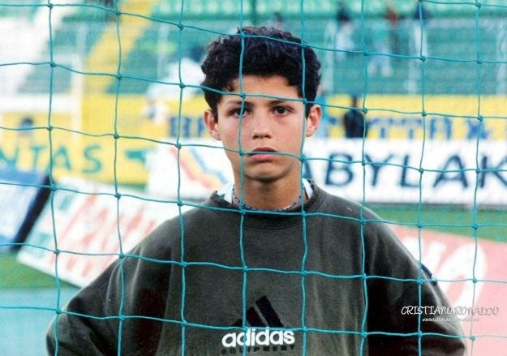
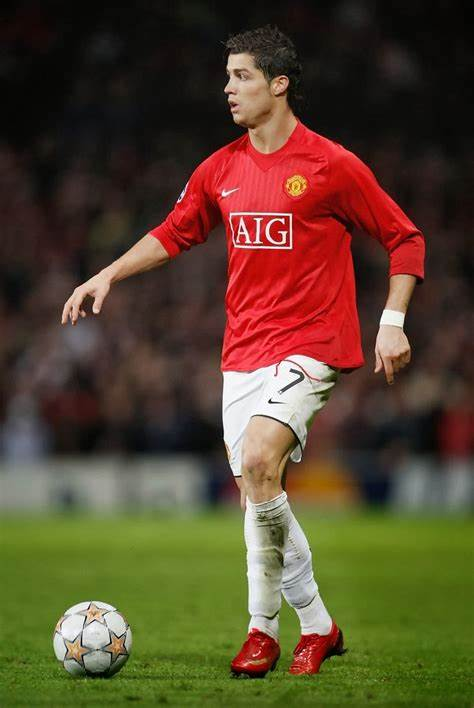
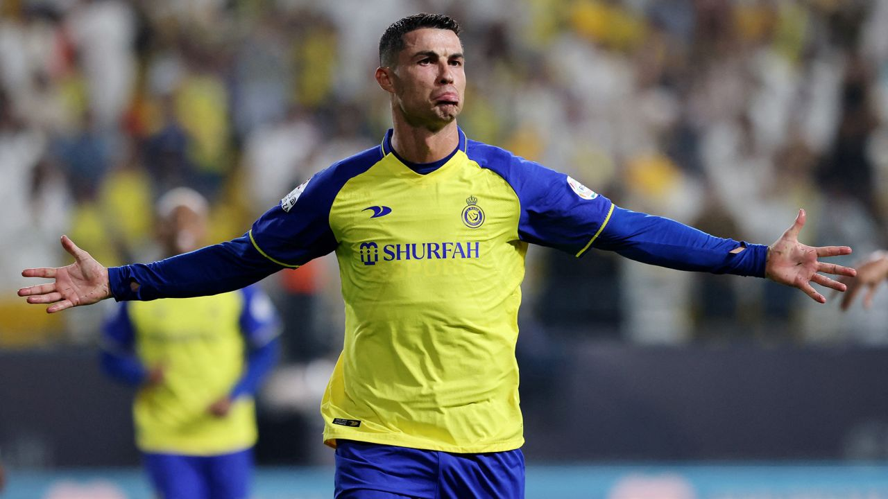

Cristiano Ronaldo, one of the greatest footballers in history, had a childhood marked by struggle, determination, and an unwavering passion for football. Born on February 5, 1985, in Funchal, Madeira, Portugal, Ronaldo grew up in a modest family that lived in challenging financial conditions. Despite the hardships, these early experiences shaped his character and laid the foundation for his remarkable success.
Ronaldo was the youngest of four children in his family. His mother, Maria Dolores dos Santos Aveiro, worked as a cook, while his father, José Dinis Aveiro, was a municipal gardener and part-time kit man for a local football club. The family lived in a small, tin-roofed house, and their modest lifestyle often meant making sacrifices to get by. Yet, even in such circumstances, Ronaldo’s love for football shone through. From a young age, he spent hours playing on the streets of Madeira, kicking improvised balls made of socks or old materials. His early exposure to the sport became a defining part of his life.
Ronaldo’s professional career began with Sporting CP, a club in Lisbon, Portugal. He joined the club’s academy at the age of 12 and quickly stood out for his remarkable talent. At just 17, he made his first-team debut in 2002, becoming one of the youngest players in the club’s history. His electrifying performances, including a standout game against Manchester United in a friendly, caught the attention of global scouts.

In 2003, Ronaldo joined Manchester United for £12.24 million, a record fee for a teenager at the time. Under the guidance of Sir Alex Ferguson, Ronaldo transformed from a promising winger into one of the world’s best players. During his six seasons at United, he won:

In 2009, Ronaldo moved to Real Madrid for a then-world-record fee of €94 million. This transfer marked the beginning of his golden era, as he became the all-time leading scorer for the club with 450 goals in 438 matches. During his nine seasons at Real Madrid, Ronaldo won:

In 2021, Ronaldo made a dramatic return to Manchester United. Despite his age, he continued to perform at a high level, finishing as the club’s top scorer in the 2021–22 season. However, his second spell at United was marked by mixed team performances, leading to his departure in late 2022.
Ronaldo joined Juventus in 2018 for €100 million. In Italy, he continued to display his extraordinary goal-scoring ability and won several trophies:
In 2023, Ronaldo signed with Al-Nassr in Saudi Arabia, marking a new chapter in his career. The move highlighted the growing global appeal of the Saudi Pro League and Ronaldo’s influence on football’s reach.

Ronaldo’s international career has been equally remarkable. As Portugal’s all-time leading scorer, he has represented his country in numerous tournaments. Key achievements include:
Winning the UEFA European Championship in 2016, Portugal’s first major international
Lifting the UEFA Nations League trophy in 2019.
Becoming the all-time top scorer in men’s international football, surpassing 120 goals.
Cristiano Ronaldo’s career is a testament to his unparalleled work ethic, dedication, and drive for success. From his early days at Sporting CP to becoming a global icon, Ronaldo has consistently redefined greatness, leaving a legacy that transcends football.